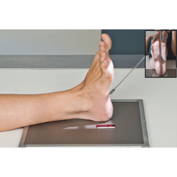
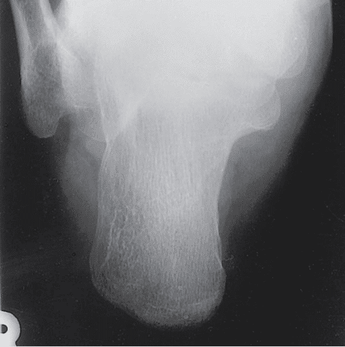
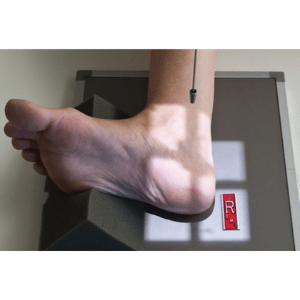
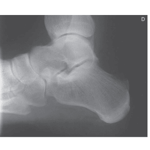

CALCÂNEO (AXIAL) - ÍNFERO SUPERIOR E SUPERO INFERIOR
Paciente
Sentado ou em D.D., perna em extensão, pé em dorsiflexão máxima, calcâneo centralizado sobre o chassi.
Chassis / Filme
18×24 – Transversalmente
Raio central
IS: com um ângulo de 40º cranial orientado para o centro do calcâneo.
SI: RC 40º caudal 5 cm acima da região posterior do calcâneo.
DFF
1,00 m – sem bucky.


Observação: Incidência realizada com cilindro de extensão fechado ou colimação adequada.
CALCÂNEO - PERFIL
Paciente
Sentado ou em D.L., Perna em extensão, pé em dorsiflexão, calcâneo centralizado em perfil sobre o chassi.
Chassis / Filme
18×24 – Transversalmente
Raio central
⊥ orientado para o centro do calcâneo.
DFF
1,00 m – sem bucky.


Observação: Incidência realizada com cilindro de extensão fechado ou colimação adequada.